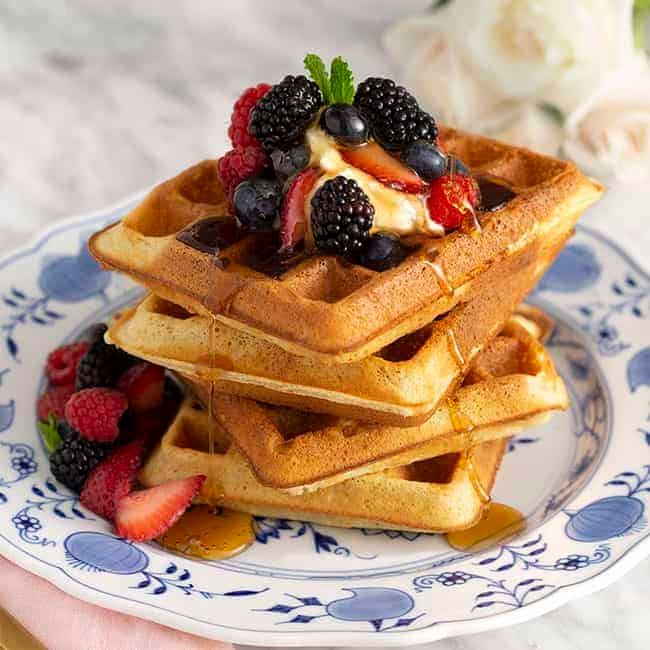

Belgian Waffles

Tender and flavorful waffles made with yeast. They're great topped with butter,
whipped cream and fresh fruit!
A waffle is a cake-like food made from leavened batter when it is poured between two hot,
patterned plates. Waffles come in a variety of shapes and sizes and they are eaten all over
the world. Belgian waffles are an American version of a original recipe invented in Brussels,
where they are made in a disc-shaped pattern. While traditionally served at breakfast, waffles
can also work well as a snack or dessert. This particular recipe will yeild 8 servings.
In order to make them you'll need all the ingredients listed below:
- 1 (.25 ounce) package active dry yeast
- ¼ cup warm milk (110 degrees F/45 degrees C)
- 3 egg yolks
- 2 ¾ cups warm milk (110 degrees F/45 degrees C)
- ¾ cup butter, melted and cooled to lukewarm
- ½ cup white sugar
- 1 ½ teaspoons salt
- 2 teaspoons vanilla extract
- 4 cups all-purpose flour
- 3 egg whites
Now let's get on to it. Follow the instructions listed below and you'll be all set to enjoy.
-
In a small bowl, dissolve yeast in 1/4 cup warm milk. Let stand until creamy, about 10 minutes.
-
In a large bowl, whisk together the egg yolks, 1/4 cup of the warm milk and the melted butter.
Stir in the yeast mixture, sugar, salt and vanilla. Stir in the remaining 2 1/2 cups milk
alternately with the flour, ending with the flour. Beat the egg whites until they form soft peaks;
fold into the batter. Cover the bowl tightly with plastic wrap. Let rise in a warm place until doubled
in volume, about 1 hour.
-
Preheat the waffle iron. Brush with oil and spoon about 1/2 cup (or as recommended by
manufacturer) onto center of iron. Close the lid and bake until it stops steaming and
the waffle is golden brown. Serve immediately or keep warm in 200 degree oven.
Well done, pal!
Personal recommendation: pour on them some honey and add some red or blue
berries on the top and it'll feel like heaven on earth!
Here we leave you the nutritional facts just in case you were wondering about them. See you on
the next recipe!
- 506 calories
- protein 12.3g
- carbohydrates 65.3g
- fat 21.4g
- cholesterol 129.9mg
- sodium 621.7mg
Back to Main Menu